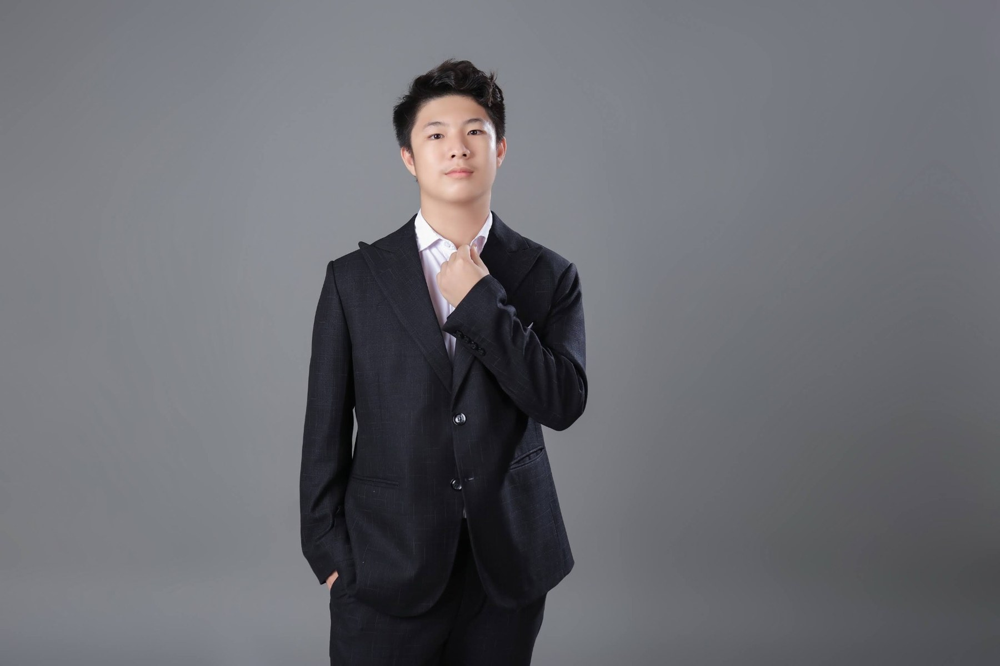
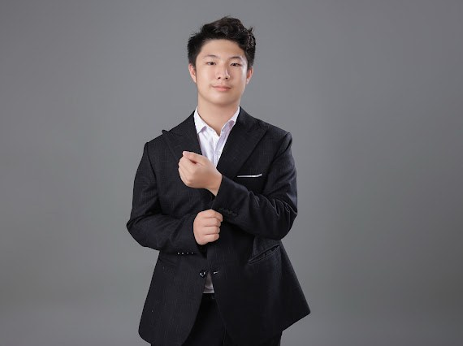

Understanding Life.
Improving Lives.
Hi, I'm Khoi Tran — curious about why we age, what happens inside our cells, and how science might help people live healthier lives.
Cambridge A Level student at Vinschool Central Park, exploring genetics, molecular biology, mathematics, and scientific research.

Why do we age?
A change I noticed in my mother's energy made me curious about the biology of aging.
What happens to our bodies over time, and how might research help us enjoy more years in good health?
Read my story →Research & exploration
Recombinant Antigens for Early HCC Detection
Research on recombinant antigen generation for antibody production toward early detection of hepatocellular carcinoma.
Read more →Protozoa in Hydroponic Systems
Culturing protozoa and evaluating their adaptability in an experimental hydroponic system.
Read more →Cellulose Nanocrystals for Water Treatment
A composite film developed for treatment of heavy-metal-contaminated water.
Read more →Functional Herbal Tea & Diabetic Enzymes
An independent biochemical research and innovation project.
Read more →Curiosity grows when shared.
From mentoring peers in mathematics to organizing science outreach and community projects, I enjoy turning curiosity into shared learning.
Explore my activities →
Curious by nature.
Science, creativity, and a willingness to learn from people and experiences beyond the classroom.
Get to know me →